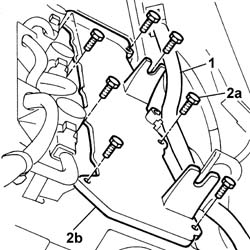
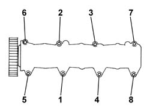

1016A34 RIGHT-HAND CAM COVER - R + R AND REPLACE GASKET
- Path
- Procedures > 10 ENGINE > 1016 CYLINDER HEAD/S > 1016A CAM COVERS > 1016A34 RIGHT-HAND CAM COVER - R + R AND REPLACE GASKET
- Kind
- repair procedure (removal / refitting; the operation number is the code)
- Applies to
- engines: 3.0 24V V6; all production periods
- Interactive page
- https://sloeber94.github.io/elrnDB-fUlss/en/#/179006870
Applies to: engines: 3.0 24V V6; all production periods
 Removing
Removing
 Refitting
Refitting- Disconnect the negative battery terminal.
Description | Connector | |
|---|---|---|
. | Battery | A001B |
Op. 5010B18 CLIMATE CONTROL UNIT AIR INTAKE - R.R.
Op. 5050B34 WINDSCREEN WIPER ARM/S COMPLETE WITH BLADE - R+R
Op. 7210E22 WINDSCREEN BASE TRIM
See in Op. 1088B10
Op. 1016A42 LEFT HAND CYLINDER HEAD IGNITION COIL COVER - R+R
Op. 1048A59 TUBAZIONE DA DEBIMETRO A MANICOTTO CORPO FARFALLATO - S.R.
See in Op. 1068A54
Op. 1072B50 SLEEVES CONNECTING AIR CAPACITY BOX TO INLET MANIFOLD IS - R+R
1. Release the eletrical wires from the fastenings and move them to free up the work area.
2. Undo the fixing bolts (2a) and remove the tappet cover (1b).

Applies to: engines: 3.0 24V V6; all production periods
Refitting
Removing- Position the tappet cover and pre-tighten the fixing the fixing bolts to the recommended torque following the order illustrated.
 | Value - daNm | Fastening | Component | Ø |
|---|---|---|---|---|
. | 0.5 | Bolts | Inlet camshaft tappet cover on head |
- Resume the tightening, following the order illustrated, until the torque is correct for all the bolts.
| Value - daNm | Fastening | Component | Ø |
|---|---|---|---|---|
. | 0.8 | Bolts | Inlet camshaft tappet cover on head |

Applies to: engines: 3.0 24V V6; all production periods
- Position the electrical wires and secure them to the mountings.
Op. 1072B50 SLEEVES CONNECTING AIR CAPACITY BOX TO INLET MANIFOLD IS - R+R
See in Op. 1068A54
Op. 1048A59 TUBAZIONE DA DEBIMETRO A MANICOTTO CORPO FARFALLATO - S.R.
Op. 1016A42 LEFT HAND CYLINDER HEAD IGNITION COIL COVER - R+R
See in Op. 1088B10
Op. 7210E22 WINDSCREEN BASE TRIM
Op. 5050B34 WINDSCREEN WIPER ARM/S COMPLETE WITH BLADE - R+R
Op. 5010B18 CLIMATE CONTROL UNIT AIR INTAKE - R.R.
- Connect the negative battery terminal.
Description | Connector | |
|---|---|---|
. | Battery | A001B |
Topics linked from this page (7)
- 0010T21 ENGINE COOLANT - CHECK DENSITY AND CHANGE, IF NECESSARY
- 1016A42 LEFT HAND CYLINDER HEAD IGNITION COIL COVER - R+R
- 1048A59 TUBAZIONE DA DEBIMETRO A MANICOTTO CORPO FARFALLATO - S.R.
- 1072B50 SLEEVES CONNECTING AIR CAPACITY BOX TO INLET MANIFOLD IS - R+R
- 5010B18 CLIMATE CONTROL UNIT AIR INTAKE - R.R.
- 5050B34 WINDSCREEN WIPER ARM/S COMPLETE WITH BLADE - R+R
- 7210E22 WINDSCREEN BASE TRIM